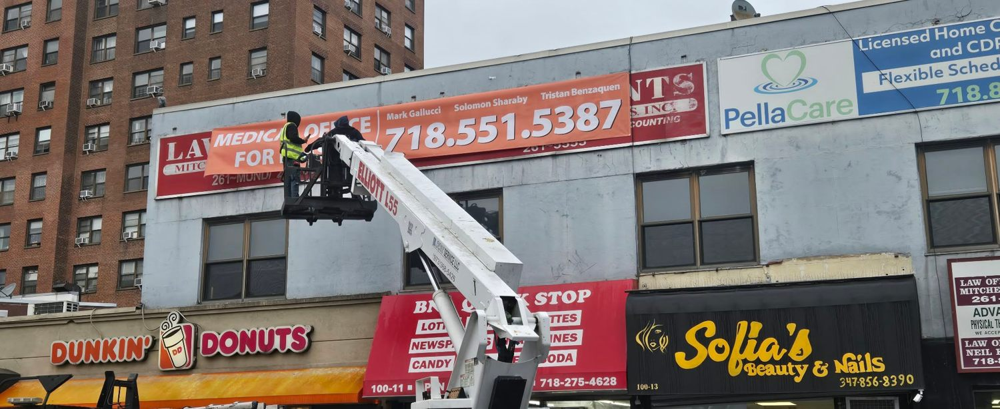
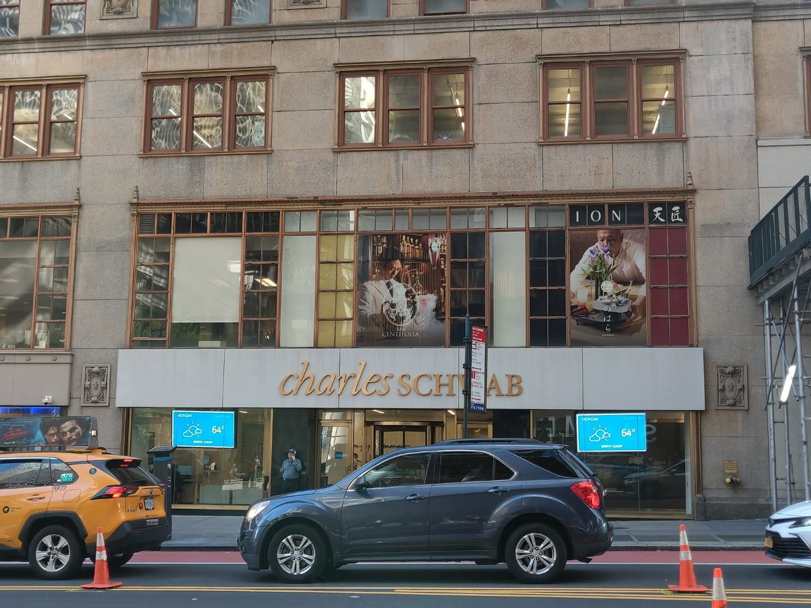
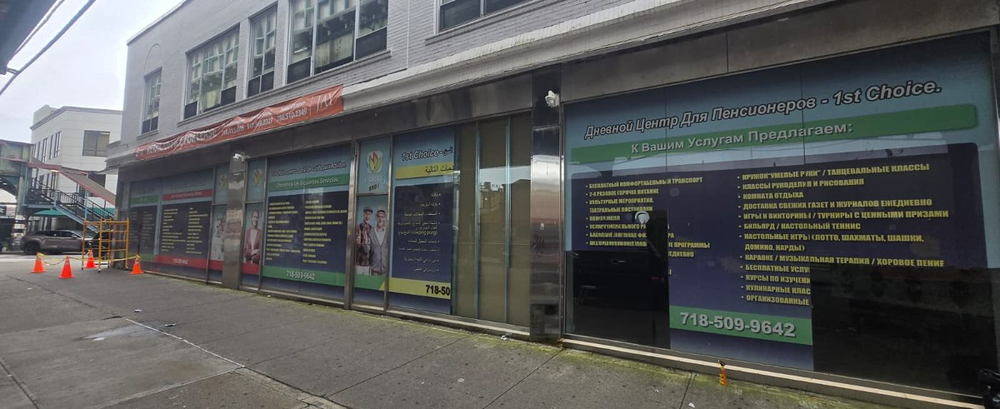
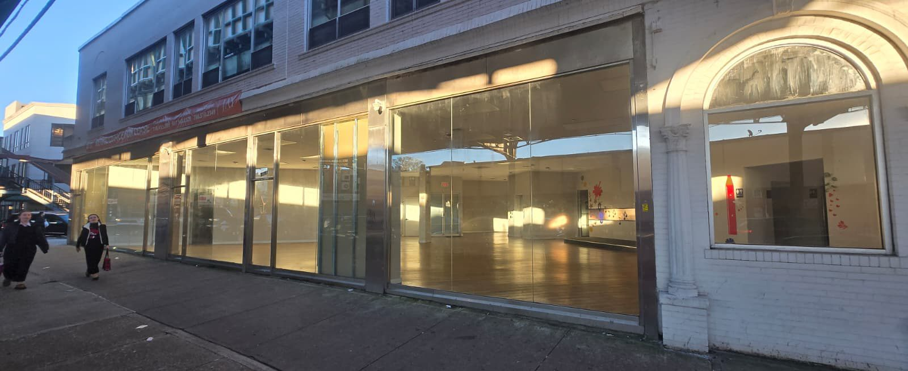
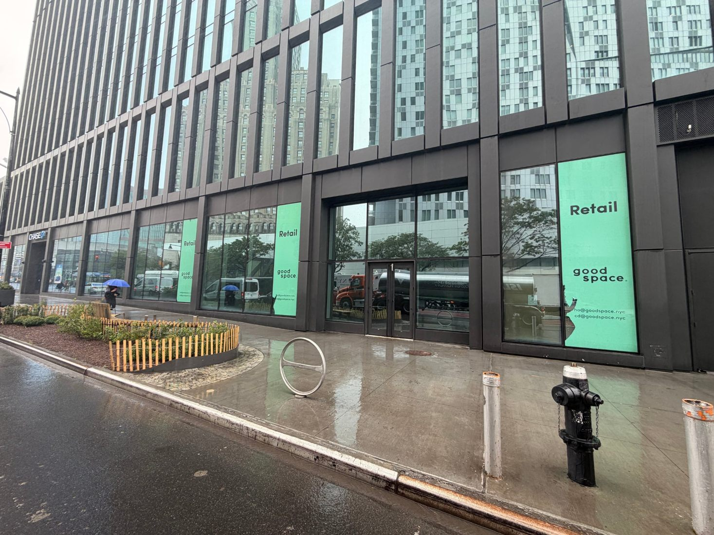

Vinyl & Window Graphics
Storefront graphics, retail campaigns, interior and exterior vinyl installation.
Professional installation, removal and production coordination for commercial graphics, storefronts and building signage.
DISCUSS YOUR PROJECT ↗
Storefront graphics, retail campaigns, interior and exterior vinyl installation.
Mesh banners, building-facing campaigns and temporary commercial signage.
Existing signage and adhesive removal, surface preparation and cleanup.
Site measurements, access planning, printing and installation logistics.



Elevated installation & access

Retail vinyl installation · NYC
Understand the location, dimensions and access requirements.
Coordinate materials, production and installation logistics.
Complete work with attention to presentation and cleanup.
Tell us the basics. Approximate details are fine — we'll follow up with any questions.
About 1 minute · No account required